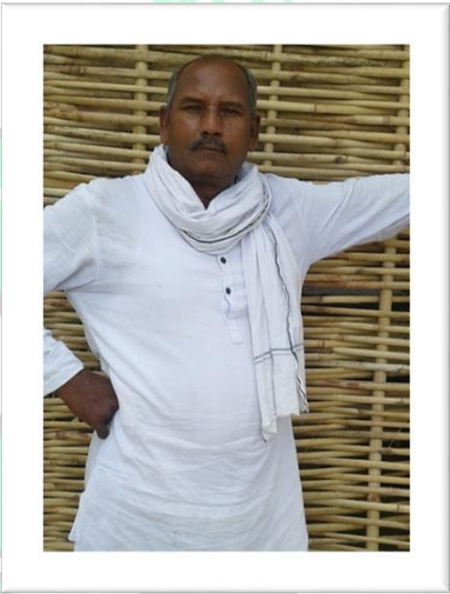
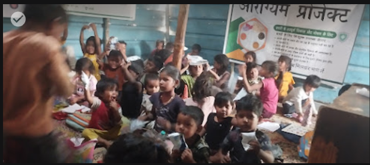
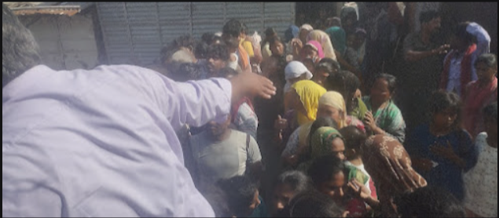
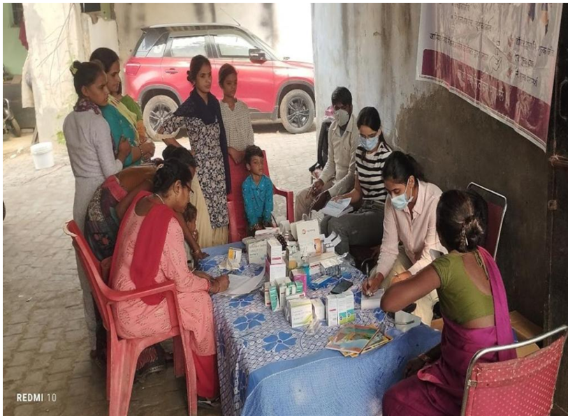
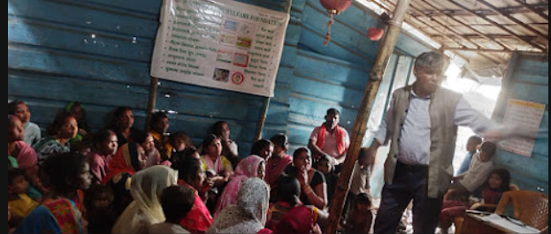
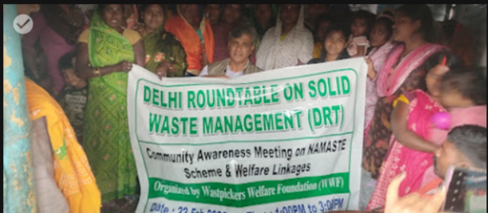
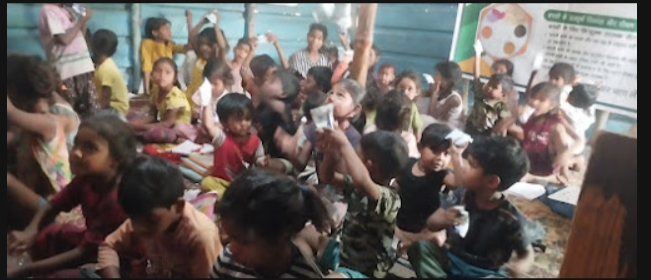
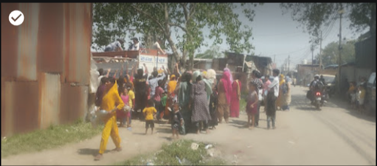
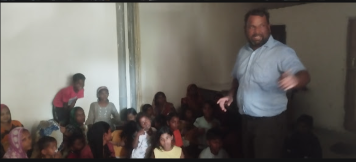

Dignity for Those Who Keep Our Cities Clean
Waste Pickers Welfare Foundation is a national-level voluntary organization dedicated to improving the lives of waste pickers and their families across Delhi NCR since 2014.
Our Work in Action
Stories of change, one moment at a time
Who We Are
Waste Pickers Welfare Foundation is a national-level voluntary organization founded in 2014 under the Trust Registration Act 1860, dedicated to improving the lives of waste pickers and their families across Delhi NCR.
Our journey began informally in 2008 when a group of dedicated social workers and professionals in Delhi NCR started reaching out to waste picker communities to understand their challenges.
At the Foundation, we believe that true change comes from within communities. That's why we work alongside waste picker families, empowering them to become agents of their own transformation.
Read Our Story
Our Founder
Late Shri Bali Charan (1969 – 2024)
My father, Late Shri Bali Charan, dedicated his entire life to uplifting the most marginalized communities in our society. From his early days working with CRY Foundation to establishing the Waste Pickers Welfare Foundation in 2014, he believed deeply that every waste picker deserves dignity, every child deserves education, and every woman deserves empowerment.
He walked into the darkest slums with a lantern of hope, touching thousands of lives across Delhi NCR — organizing health camps, building learning centres for children, and fighting for the rights of those whom society had forgotten.
"He started this journey with nothing but compassion. Today, I walk in his footsteps — carrying forward his dream of a world where no family is left behind."
— Virender Kumar, Secretary, Waste Pickers Welfare Foundation
Read His Full StoryOur Vision & Mission
Guiding principles that drive our work
Our Vision
"Formation of an equitable society where children, women, and other marginalized people can live with self-esteem and dignity."
Our Mission
"A dignified and inclusive environment for all waste workers, with access to basic services, fair livelihoods, and institutional recognition."
Our Programs
Six comprehensive programs transforming lives across Delhi NCR
Child Education
Our Community Learning Centres provide non-formal education to out-of-school children, preparing them for admission into formal schools.
Healthcare
We organize monthly health camps in partnership with Max Foundation and CII, providing free medical consultations and medicines.
Women Empowerment
Our women empowerment program focuses on forming Self-Help Groups (SHGs) and providing vocational training in stitching and tailoring.
Drug Abuse Prevention
Recognizing the devastating impact of substance abuse, we run comprehensive prevention programs including school awareness campaigns.
Community Development
We work on advocacy for waste picker rights, helping community members obtain identity cards and access government schemes.
Skill Development
Our vocational training programs equip youth and adults with marketable skills in trades such as tailoring and computer basics.
Voices of Change
Real stories from the families we've touched
The Foundation changed my children's future. Before they joined the learning center, my kids had no hope of education. Now my eldest daughter wants to become a teacher. This organization gave my family dignity and a path forward.
My daughter is now in school because of the Foundation. The team helped us get her admission and provided books and uniform. She studies in a proper school now and dreams of becoming a doctor. Our lives have changed completely.
The health camp saved my family during the pandemic. When we had no way to get medicine or doctor consultations, the Foundation was there. They provided ration kits, medicines, and most importantly, hope. I will forever be grateful.
Our Impact in Pictures
Capturing moments of transformation and hope








Our Partners
Join Us in Making a Difference
Your support can transform lives. Together, we can build a more equitable society.